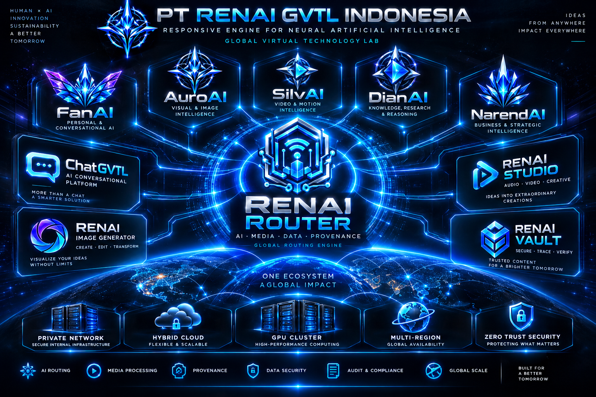

Catatan internal mengenai penetapan arah, arsitektur, prinsip keamanan, dan target pengembangan RENAI Router.

Pada 10 September 2026 , PT RENAI GVTL Indonesia melaksanakan Internal Meeting — RENAI Router sebagai bagian dari penetapan arah pengembangan infrastruktur utama RENAI.
Meeting ini berfokus pada penetapan arah akhir RENAI Router sebagai critical internal infrastructure , sekaligus menetapkan prinsip, batasan akses, mekanisme routing, keamanan, provenance, dan target skala sistem.
Kegiatan:
Internal Meeting — RENAI Router
Peserta:
Redian, Ibu Airin, dan tim internal
Waktu Penutupan:
00:34 WIB
01 — Critical Internal Infrastructure
Menetapkan arah akhir RENAI Router sebagai critical internal infrastructure PT RENAI GVTL Indonesia.
02 — Mandatory RENAI Routing
RENAI Router ditetapkan sebagai jalur wajib untuk ekosistem RENAI, terutama ChatGVTL dan RENAI Image Generator .
03 — Automatic AI / Service Routing
Sistem akan diarahkan untuk melakukan routing AI atau service secara otomatis berdasarkan capability, task, quality, latency, cost, privacy, availability, GPU capacity, security, classification, permission, policy, dan parameter lainnya.
04 — Zero Trust & Fail-Closed
Zero Trust dan fail-closed ditetapkan sebagai prinsip utama dalam arsitektur keamanan RENAI Router.
05 — External Access Control
Tidak ada akses langsung pihak eksternal ke internal RENAI secara default.
06 — Third-Party API Control
Penggunaan third-party API hanya diperbolehkan melalui kontrol RENAI.
07 — Route Authority
Menetapkan Redian sebagai Route Authority dengan mekanisme emergency / break-glass recovery .
08 — Original Media Retention
Original media ditetapkan untuk disimpan secara internal dengan target awal sekitar 6 bulan .
09 — Provenance & Audit History
Provenance dan audit ditetapkan memiliki histori yang dapat dipertahankan untuk mendukung integritas dan penelusuran proses.
10 — Multi-Server & Hybrid Architecture
Target arsitektur diarahkan menuju multi-server, hybrid/cloud, GPU cluster, multi-region, dan automatic failover .
11 — Target Scale
Sistem diarahkan menuju target skala miliaran media per hari sebagai visi kapasitas jangka panjang RENAI Router.
12 — RENAI Router v1.0.0
Target RENAI Router v1.0.0 ditetapkan sebagai Full Production untuk infrastruktur utama PT RENAI GVTL Indonesia.
Sebagai hasil lanjutan dari meeting, RENAI Router Master Blueprint v1.0 dibuat sebagai baseline untuk proses review sebelum pengembangan berikutnya.
RENAI ROUTER
FROM ARCHITECTURE TO CRITICAL INFRASTRUCTURE
🟢 Ditutup — menunggu review Redian terhadap RENAI Router Master Blueprint v1.0 .
Date:
10 September 2026
Closing Time:
00:34 WIB
Status: Internal Meeting — Closed / Blueprint Review Pending
© PT RenAI GVTL Indonesia Research & Development (R&D)